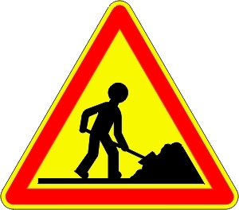

pySequence est un logiciel libre qui fournit une aide pour :
pySequence s'adresse particulièrement aux professeurs de Sciences Industrielles de l'Ingénieur enseignant dans les filières :
Et en travaux :
et potentiellement n'importe quel programme d'enseignement.
Quelques exemples de fiches de séquence
Quelques exemples de fiches de projet
Versions récentes : https://github.com/cedrick-f/pySequence/releases
Anciennes versions : https://drive.google.com/folderview?id=0B2jxnxsuUscPX0tFLVN0cF91TGc#list
pySequence existe :
pySequence est développé par Cédrick FAURY et Jean-Claude FRICOU
Toutes les bonnes volontés pour le développement de pySequence sont les bienvenues. Pour ceux qui souhaitent intervenir sur le code, voici les prérequis